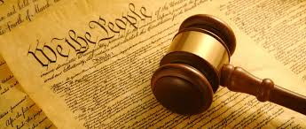
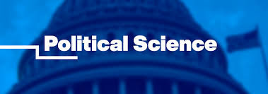

Political Science
Political science is the study of governments, public policies, and political behavior. It analyzes how power is distributed, decisions are made, and how these factors impact societies. It encompasses the study of political systems, political theory, comparative politics, and international relations.
What You Learn in a Class
In Political Science class you learn about the theory and practiceof governments, politics, and encompassing both domestic and International perspectives

Key Aspects
- Political Theory: Examines fundamental concepts like Justice, democracy, and the nature of government
- Comparative Politics: Studies different political systems/institutions across the many countries
- International Relationships: Focuses on the relationhips between nations, including democracy, conflict, and cooperation
- Public Administration: Deals with the implementation of public policy and the managment of public agencies
- Political Behaviour: Explores how individuals and groups participate in the political process, including voting behavior and public opinion
- Public Law: Examines the legal frameworks and institutions that govern political activity

Benefits of Political Science
- Provides many Job opportunities in government
- Develops critical thinking and analytical skills
- enhances communication abilities
- Fosters a deeper thinking in the political system
- Helps you discover how to advocate for certain groups
Essentially Political science is learning how politics, power, and governance works and how it effects the people